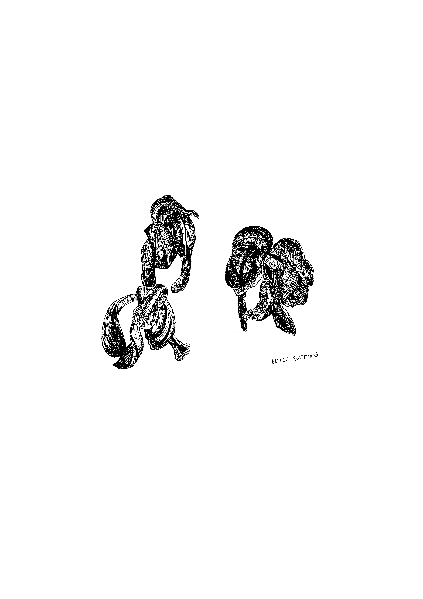

Toon Moestermans, graphic/type designer
Type-inter-play assignment
Er werd ons gevraagd, om bij een gegeven tekst, een interessant en origineel navigatie systeem te ontwerpen. Mijn insteek: Een systeem waarbij de lezer door het vouwen van flappen, snel doorheen de tekst kan bladeren en bij het gewenste sleutelwoord de flappen open kan open vouwen. Ik ontwierp ook een verwijzing systeem om gemakkelijk afbeeldingen, die worden aangehaald in de tekst, terug te vinden in de index.


Typeface genres
De studenten kozen een boekgenre, om er vervolgens een lettertype voor te ontwerpen. Aangezien een van mijn hobbies schaken is, was de keuze snel gemaakt. Ik ontwierp een display letter en een brood letter.

bachelorproef
Ik probeer persoonlijke reflecties en overpeinzingen tijdens de wandeling, weer te geven in mijn tekeningen. Ik onderzoek hoe de wandeling en de natuur veranderen van subject naar medium en hoe ze een verlengstuk van de kunstenaar worden. hier ziet u een kleine selectie van een groot volume inkt tekeningen

Wow! bedankt dat je contact wilt opnemen met mij! :-)
Je kan me het best via email bereiken.
Tot snel!